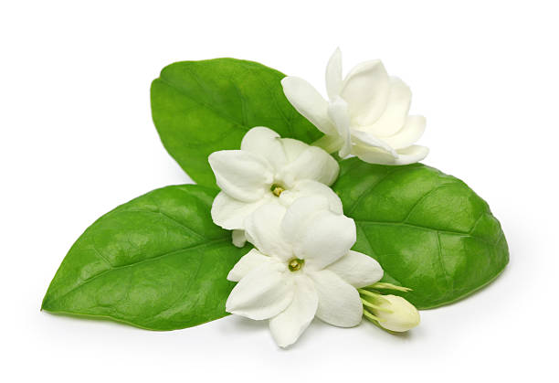

Rose
The rose is one of the most cherished and iconic flowers worldwide, renowned for its stunning beauty and fragrant aroma. With origins tracing back to ancient civilizations, roses are celebrated for their diverse colors and intricate petal arrangements. Each color of rose carries its own symbolic meaning: red roses symbolize love and passion, white roses signify purity and innocence, yellow roses represent friendship and joy, and pink roses convey admiration and gratitude. Roses are versatile in their uses, often featured in bouquets, gardens, and even as a symbol in various cultural traditions. Their care and cultivation vary, with some varieties thriving in specific climates and others being more adaptable. The rose’s rich history and cultural significance make it a perennial favorite in both art and literature.
Lily
Lilies are known for their elegant and refined appearance, with long, slender petals that create a graceful silhouette. Originating from various parts of the world, lilies have been a symbol of purity and transience in many cultures. They are available in an array of colors, each carrying its own connotation: white lilies symbolize purity and virtue, while orange lilies signify passion and confidence. Lilies are often used in floral arrangements for weddings, funerals, and other significant occasions, thanks to their ability to convey deep emotions. They come in several species, including the Asiatic, Oriental, and Trumpet lilies, each with unique characteristics and care requirements. Lilies also have historical importance, often depicted in religious art and literature.
Sunflower

Sunflowers are iconic for their large, vibrant yellow petals and their ability to follow the sun’s path across the sky. Native to the Americas, sunflowers are symbols of adoration, loyalty, and longevity. Their bright appearance makes them popular in gardens and floral arrangements, bringing a sense of cheer and positivity. Sunflowers have practical uses as well, with their seeds being a common snack and ingredient in various foods, while their oil is used in cooking and cosmetics. The sunflower’s unique trait of heliotropism—where the flower head follows the sun—adds to its charm and appeal. They are also a symbol of the harvest and have cultural significance in various festivals and traditions.
Tulip

Tulips are beloved spring flowers, known for their vibrant colors and elegant shape. They originate from Central Asia and have become a staple in gardens and floral displays around the world. Tulips come in a wide range of colors, including red, pink, yellow, and purple, each symbolizing different emotions: red tulips signify true love, while yellow tulips represent cheerful thoughts. Tulips are associated with the arrival of spring and are celebrated in festivals such as the Tulip Festival in the Netherlands. They are relatively easy to grow, making them a popular choice for gardeners. Their simplicity and beauty have made them a favorite in both traditional and modern floral arrangements.
Orchid
Orchids are known for their exotic and intricate blooms, which come in a vast array of colors and shapes. Originating from tropical regions around the world, orchids symbolize beauty, strength, and luxury. They are admired for their unique floral structures and long-lasting blooms, making them a popular choice for indoor gardening. Orchids are also used in various cultural rituals and traditional medicines. Their diverse species, including the Phalaenopsis, Cattleya, and Dendrobium, each have their own care needs and characteristics. The orchid’s ability to thrive in different environments and its stunning appearance have made it a favorite among plant enthusiasts.
Hibiscus
The hibiscus is a striking tropical flower known for its large, trumpet-shaped petals and vibrant colors, including red, pink, yellow, and white. Native to tropical and subtropical regions, hibiscus flowers symbolize delicate beauty and warmth. They are commonly used in traditional medicine and culinary dishes, particularly in the preparation of hibiscus tea, which is known for its health benefits and refreshing taste. The hibiscus plant is also popular in landscaping and as a decorative plant in tropical gardens. In some cultures, the hibiscus is associated with feminine beauty and is used in various ceremonies and celebrations. Its dramatic appearance and cultural significance make it a standout flower.
Daisy

Daisies are simple yet charming flowers known for their white petals and yellow center. They symbolize innocence, purity, and new beginnings, making them a popular choice in floral arrangements for weddings and celebrations. The daisy’s unpretentious beauty and cheerful appearance have made it a favorite among gardeners and florists alike. Daisies are native to Europe and North America and are known for their resilience and ease of cultivation. They come in various species, including the Shasta daisy and the Gerbera daisy, each with unique traits and care requirements. Daisies are also used in herbal remedies and have a long history of cultural significance in different regions.
Marigold

Marigolds are vibrant flowers known for their rich golden-orange hues and robust, resilient nature. They are often used in gardens and festivals for their bright color and easy maintenance. Marigolds are symbols of warmth, positivity, and creativity, and their bright blossoms are believed to bring good luck and protection. They are also used in traditional medicine and as a natural insect repellent. Marigolds come in several varieties, including the French marigold and the African marigold, each with its own growth habits and characteristics. Their versatility and striking color make them a popular choice for gardeners and floral designers.
Jasmine
Jasmine is a fragrant flower that is often white or yellow and is known for its sweet, intoxicating scent. Native to tropical and subtropical regions, jasmine symbolizes purity, love, and sensuality. It is commonly used in perfumes, aromatherapy, and traditional medicine for its calming and uplifting properties. Jasmine plants are popular in gardens and as indoor houseplants due to their lovely fragrance and attractive appearance. The flower's delicate beauty and soothing aroma make it a favorite in various cultural rituals and ceremonies. Jasmine is also associated with romance and is often used in wedding bouquets and floral arrangements.
Lotus

The lotus flower is an aquatic perennial. Sometimes mistaken for the water-lily, the lotus has a distinctively different structure. It also only comes in pink hues or white, whereas the lily comes in many different colors. The roots are implanted in the soil of a river or pond, and the leaves float on the surface. Lotus has a life cycle unlike any other plant. With its roots latched in mud, it submerges every night into river water and miraculously re-blooms the next morning, sparklingly clean. As a result, this has led the lotus to have associations as the flower with rebirth and spiritual enlightenment.